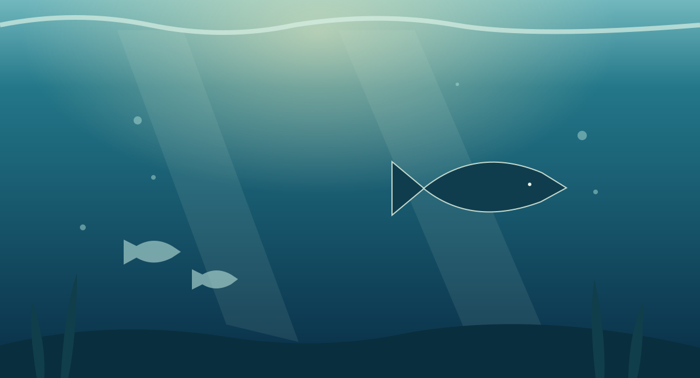

Chapter 01 / The sky
A map in the stars
Why familiar shapes appear in an ever-changing night sky.
Read chapter
An illustrated field guide · Volume 01
Three visual journeys through the patterns that connect our world, from the stars above to the life beneath our feet.
Explore the chaptersA different perspective
Follow the illustrations and discover a little of the science behind each scene. Every chapter starts with an image, then takes a closer look at what it shows.
Start exploring
Why familiar shapes appear in an ever-changing night sky.
Read chapter
Follow the sunlight as it fades into the deep blue.
Read chapterWhat a sunlit woodland reveals about a living ecosystem.
Read chapter